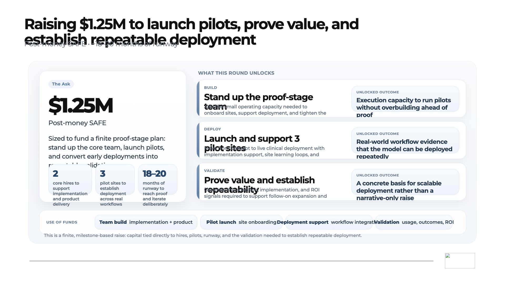
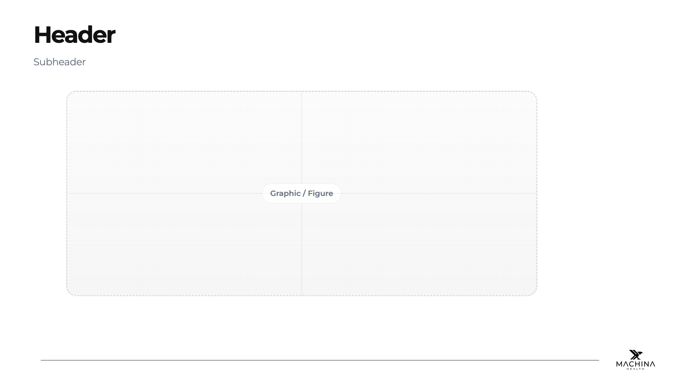
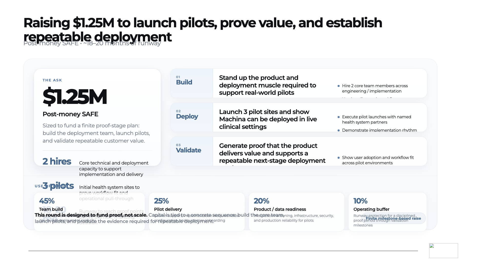
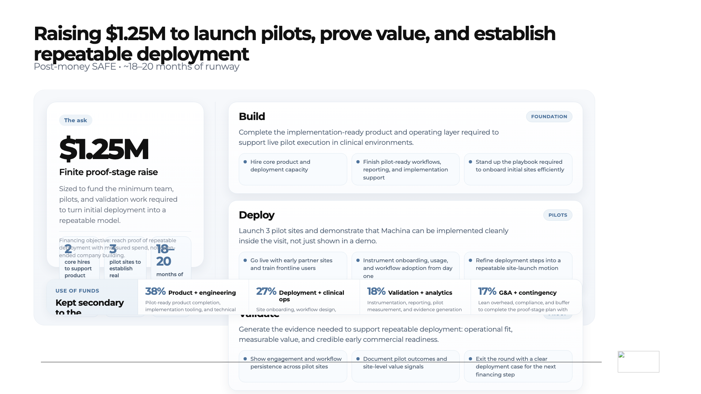

openai-a
Status: blocked
Outcome: block
Reason: Regression review found a concrete blocker.

Requested change
Create a finished Designer deck slide from the seeded blank template. Slide id: slide-13 Lane: html Slide title: Raising $1.25M to launch pilots, prove value, and establish repeatable deployment Locked header: Raising $1.25M to launch pilots, prove value, and establish repeatable deployment Locked subheader: Post-money SAFE • ~18–20 months of runway Audience should leave believing: This is a finite, milestone-based raise tied to proof-stage deployment. Core claim: This is a finite, milestone-based raise tied to proof-stage deployment. Slide job: close with a disciplined proof-stage ask Figure burden: surface the ask first, then show what the round unlocks Figure logic: Use one integrated master card: left hero ask block, right stacked Build / Deploy / Validate milestone cards, and a restrained use-of-funds ribbon across the bottom. Build status: create workflow underway from the April 5, 2026 ask build spec Locked spec guidance: ### Current official read **Slide job** This is the closing ask slide. It should turn the deck into a finite proof-stage financing plan rather than a generic raise page. **Core claim** **The ask is disciplined, milestone-based, and sized to prove the next stage of deployment.** **What this slide must make the audience believe** **$1.25M on a post-money SAFE funds the hires, pilots, runway, and validation needed to establish repeatable deployment.** **Current preferred header** **Raising $1.25M to launch pilots, prove value, and establish repeatable deployment** **Current preferred subheader** **Post-money SAFE • ~18–20 months of runway** **Current preferred figure logic** A single integrated master card: left hero ask block, right stacked Build / Deploy / Validate milestone cards, and a restrained use-of-funds ribbon across the bottom. ### Preserved strategic discussion The slide should surface the ask on first scan, then show exactly what the round unlocks. It should feel like a clean conversion slide: thesis translated into financing logic. Keep the left side focused on the amount, instrument, and support stats (`2 core hires`, `3 pilot sites`, `18–20 months`). Keep the right side focused on outcome-first milestone cards, not generic startup activity. Keep the bottom ribbon quieter than the milestone logic. This slide must avoid: - spreadsheet or payroll memo energy - generic build / scale / go-to-market language - decorative icons or illustration - use-of-funds detail that overpowers the milestones Preferred visual treatment: - soft gray field with calm white card surfaces - restrained shadow and rounded corners - one muted blue accent family only - premium, clinically serious late-deck tone Fallback only if needed: convert the right column into a horizontal three-card strip if the stacked milestone column becomes crowded. **One-line test** **This feels like funding a concrete proof plan, not funding hope.** --- Existing slide note excerpt: # Slide 13 — The Ask
Success checks
- The slide is fully resolved and presentation-ready. - No template placeholders remain. - The header reads: Raising $1.25M to launch pilots, prove value, and establish repeatable deployment - The subheader reads: Post-money SAFE • ~18–20 months of runway - The figure visibly carries the specified burden. - The slide stays inside the locked Designer shell contract. - The footer rule and footer logo remain aligned with the shell. - The slide feels in-family with the adjacent official slides.
Guardrails
- preserve the white Designer shell - preserve the footer rule and footer logo - do not leave the figure stub or placeholder copy visible - do not turn the slide into a browser page, app UI, or card grid unless the brief explicitly requires it - do not weaken the locked slide claim
Approved regions


Status: completed
Summary: pass=0 retry=0 blocked=3 escalated=3
# Round 01 retry synthesis ## preserve - Preserve stable parts of the current slide family. ## still_missing - Keep pushing the requested change. ## avoid - Avoid unrelated regressions. ## next_move - Make the delta clearer in the next round.
Status: blocked
Outcome: block
Reason: Regression review found a concrete blocker.

Status: blocked
Outcome: block
Reason: Regression review found a concrete blocker.

Status: blocked
Outcome: block
Reason: Regression review found a concrete blocker.

Status: render_failed
Outcome: escalate
Reason: Render failed: page.setViewportSize: Target page, context or browser has been closed
Status: render_failed
Outcome: escalate
Reason: Render failed: browser.newPage: Target page, context or browser has been closed
Status: render_failed
Outcome: escalate
Reason: Render failed: browser.newPage: Target page, context or browser has been closed